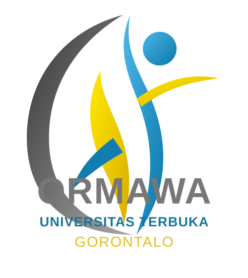

JOIN ORMAWA UT GORONTALO
Kuliah bukan hanya tentang mendapatkan ijazah. Bergabunglah bersama ORMAWA UT Gorontalo untuk membangun pengalaman, relasi, kepemimpinan, kreativitas, dan kontribusi nyata sebagai mahasiswa.
📝 DAFTAR JADI ANGGOTA / PENGURUS 💬 GABUNG GRUP WHATSAPP 📸 INSTAGRAM ORMAWA UT GORONTALO ℹ️ KENALI ORMAWA 📞 HUBUNGI PENGURUSTentang ORMAWA
ORMAWA UT Gorontalo merupakan ruang bagi mahasiswa untuk mengembangkan potensi, belajar berorganisasi, bekerja dalam tim, melatih kepemimpinan, serta berkontribusi melalui berbagai kegiatan kemahasiswaan.
Diskusi, kajian, literasi, akademik, penelitian, dan pengembangan wawasan.
Pengembangan bakat, kreativitas, seni, olahraga, serta kemampuan berwirausaha.
Kegiatan sosial, pengabdian masyarakat, kepedulian terhadap sesama dan lingkungan.
Komunikasi, publikasi, dokumentasi, desain, media sosial, dan relasi organisasi.
🌟 Pilih Bidang Sesuai Potensimu
Tidak perlu menunggu merasa hebat untuk bergabung. Pilih bidang yang paling sesuai dengan minat dan potensi kamu. Jika pilihan pertama penuh, pengurus dapat mengarahkan kamu ke bidang lain yang sesuai.
Siapa yang boleh bergabung?
Mahasiswa UT Gorontalo yang ingin belajar, berkembang, berkontribusi, dan mendapatkan pengalaman organisasi. Tidak harus sudah berpengalaman. Yang penting punya kemauan untuk belajar dan aktif.
Siap menjadi bagian dari kami?
Scan QR Code, isi formulir, dan tunggu informasi selanjutnya dari pengurus ORMAWA UT Gorontalo.